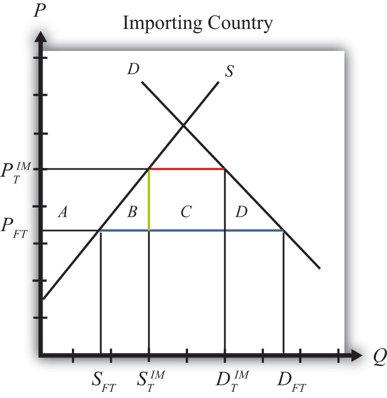
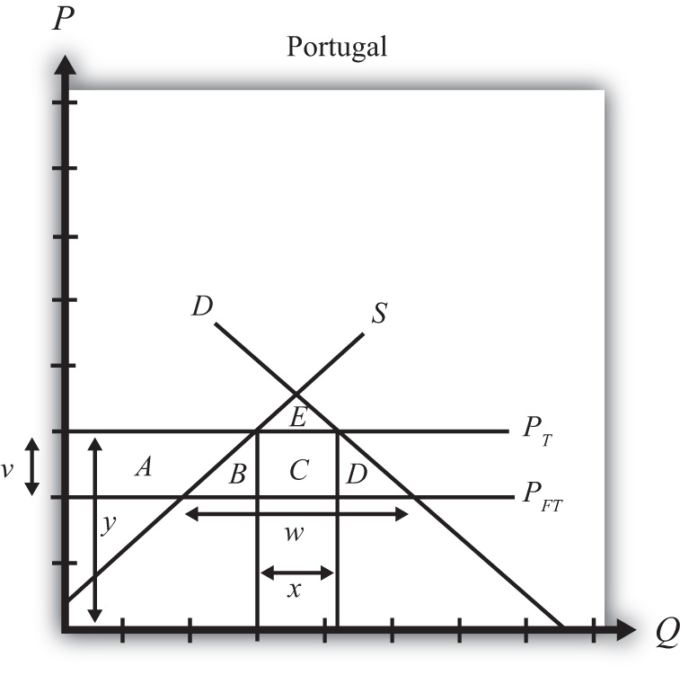

Consider a market in a small importing country that faces an international or world price of PFT in free trade. The free trade equilibrium is depicted in Figure 7.18 "Welfare Effects of a Tariff: Small Country Case", where PFT is the free trade equilibrium price. At that price, domestic demand is given by DFT, domestic supply by SFT, and imports by the difference DFT − SFT (the blue line in the figure).
Figure 7.18 Welfare Effects of a Tariff: Small Country Case
When a specific tariff is implemented by a small country, it will raise the domestic price by the full value of the tariff. Suppose the price in the importing country rises to because of the tariff. In this case, the tariff rate would be , equal to the length of the green line segment in the figure.
Table 7.3 "Welfare Effects of an Import Tariff" provides a summary of the direction and magnitude of the welfare effects to producers, consumers, and the governments in the importing country. The aggregate national welfare effect is also shown.
Table 7.3 Welfare Effects of an Import Tariff
| Importing Country | |
|---|---|
| Consumer Surplus | − (A + B + C + D) |
| Producer Surplus | + A |
| Govt. Revenue | + C |
| National Welfare | − B − D |
Refer to Table 7.3 "Welfare Effects of an Import Tariff" and Figure 7.18 "Welfare Effects of a Tariff: Small Country Case" to see how the magnitudes of the changes are represented.
Tariff effects on the importing country’s consumers. Consumers of the product in the importing country are worse off as a result of the tariff. The increase in the domestic price of both imported goods and the domestic substitutes reduces consumer surplus in the market.
Tariff effects on the importing country’s producers. Producers in the importing country are better off as a result of the tariff. The increase in the price of their product increases producer surplus in the industry. The price increases also induce an increase in the output of existing firms (and perhaps the addition of new firms), an increase in employment, and an increase in profit, payments, or both to fixed costs.
Tariff effects on the importing country’s government. The government receives tariff revenue as a result of the tariff. Who will benefit from the revenue depends on how the government spends it. These funds help support diverse government spending programs; therefore, someone within the country will be the likely recipient of these benefits.
Tariff effects on the importing country. The aggregate welfare effect for the country is found by summing the gains and losses to consumers, producers, and the government. The net effect consists of two components: a negative production efficiency loss (B) and a negative consumption efficiency loss (D). The two losses together are typically referred to as “deadweight losses.”
Because there are only negative elements in the national welfare change, the net national welfare effect of a tariff must be negative. This means that a tariff implemented by a small importing country must reduce national welfare.
In summary, the following are true:
Consider the following trade policy action (applied by the domestic country) listed along the top row of the table below. In the empty boxes, use the following notation to indicate the effect of the policy on the variables listed in the first column. Use a partial equilibrium model to determine the answers, and assume that the shapes of the supply and demand curves are “normal.” Assume that the policy does not begin with, or result in, prohibitive trade policies. Also assume that the policy does not correct for market imperfections or distortions. Use the following notation:
+ the variable increases
− the variable decreases
0 the variable does not change
A the variable change is ambiguous (i.e., it may rise, it may fall)
Table 7.4 Trade Policy Effects
| Import Tariff Reduction by a Small Country | |
|---|---|
| Domestic Market Price | |
| Domestic Industry Employment | |
| Domestic Consumer Welfare | |
| Domestic Producer Welfare | |
| Domestic Government Revenue | |
| Domestic National Welfare | |
| Foreign Price | |
| Foreign Consumer Welfare | |
| Foreign Producer Welfare | |
| Foreign National Welfare |
Consider the following partial equilibrium diagram depicting the market for radios in Portugal, a small importing country. Suppose PFT is the free trade price and PT is the price in Portugal when a tariff is in place. Answer the following questions by referring to the diagram. Assume the letters, A, B, C, D, and E refer to areas on the graph. The letters v, w, x, and y refer to lengths. (Be sure to include the direction of changes by indicating “+” or “−.”)
Figure 7.19 A Small Trading Country
